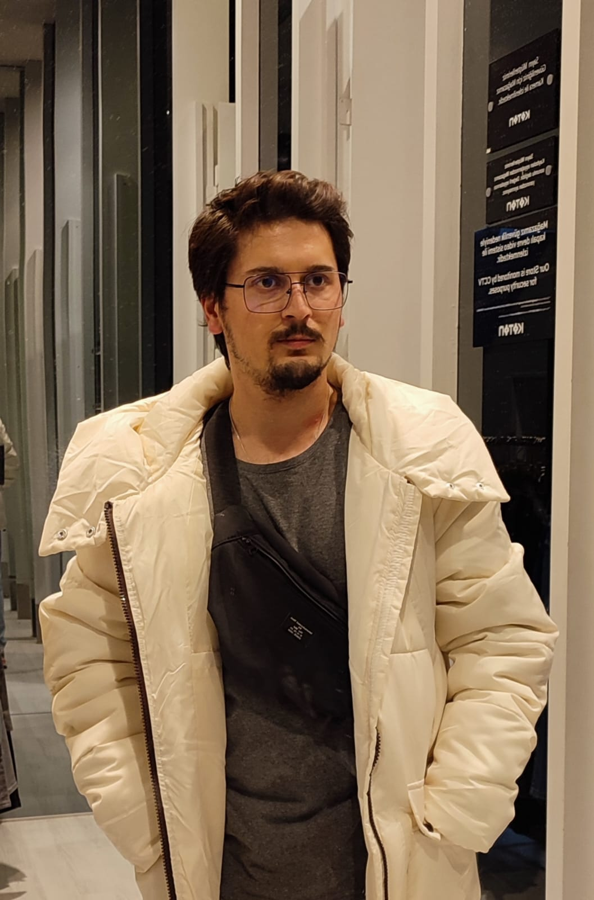

Safa Can BAŞ

Summary
I am a senior electrical and electronics engineering student who is constantly trying to improve himself to become a web developer. I am hardworking, adaptable, quick learner and enthusiastic.
Education
- Sakarya University - Electrical and Electronics Engineering (2019-2023)
- Marmara University - Electronic Technology
- Enka Technical High School (100% Scholarship) - Computerized Machine Manufacturing
Work Experience
Skills
- HTML: 🌟🌟🌟🌟🌟
- CSS: 🌟🌟🌟🌟
- JavaScript: 🌟🌟🌟
- React Native: 🌟🌟🌟
- MATLAB: 🌟🌟🌟🌟
- Python: 🌟🌟🌟🌟
- Microsoft Office Suite: 🌟🌟🌟
- Organizational skills: 🌟🌟🌟🌟🌟
Awards and Certifications
- IBM: What is Data Science? (February 2022)
- IBM: Tools for Data Science? (May 2022)
- IBM: Data Science Methodology (May 2022)
- Coursera: Diabetic Retinopathy Detection with Artificial Intelligence
- Directorate General Of Civil Aviation: UAV Pilot 1 (September 2020)
- Being An Ethical Hacker At Udemy: Web Penetration Tests And Bug Bounty (September 2020)
- Autocad (Intermediate Level)
- Solidworks (Intermediate Level)
- English (Writing: Good,Reading: Good,Speaking: Intermediate)
Other